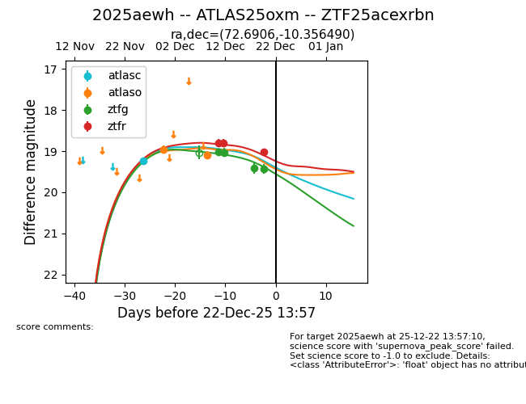
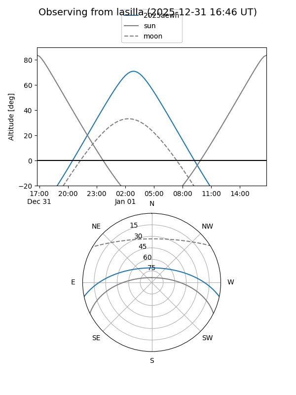
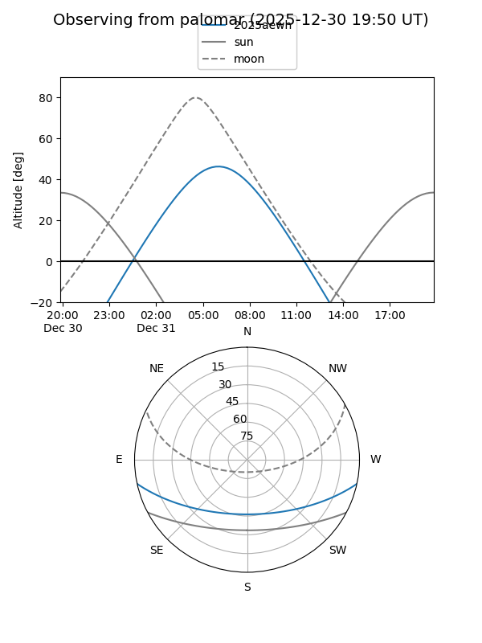
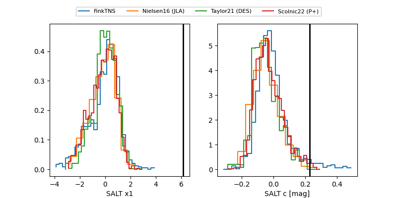

2025aewh
Target 2025aewh at 2025-12-20 06:39
Aliases and brokers:
FINK: fink-portal.org/ZTF25acexrbn
Lasair: lasair-ztf.lsst.ac.uk/objects/ZTF25acexrbn
ALeRCE: alerce.online/object/ZTF25acexrbn
TNS: wis-tns.org/object/2025aewh
YSE: ziggy.ucolick.org/yse/transient_detail/2025aewh
alt names
ZTF25acexrbn (ztf,fink_ztf)
2025aewh (tns,yse)
ATLAS25oxm (atlas)
Coordinates:
equatorial (ra, dec) = 72.6906,-10.35649
equatorial (HMS+DMS) = 04:50:45.74,-10:21:23.36
galactic (l, b) = (208.5328,-31.46319)
Flags:
Photometry:
last atlasc=19.24, atlaso=19.10, ztfg=19.43, ztfr=18.80
1 atlasc, 2 atlaso, 4 ztfg, 2 ztfr detections
Lightcurve

Visibility


Additional plots
